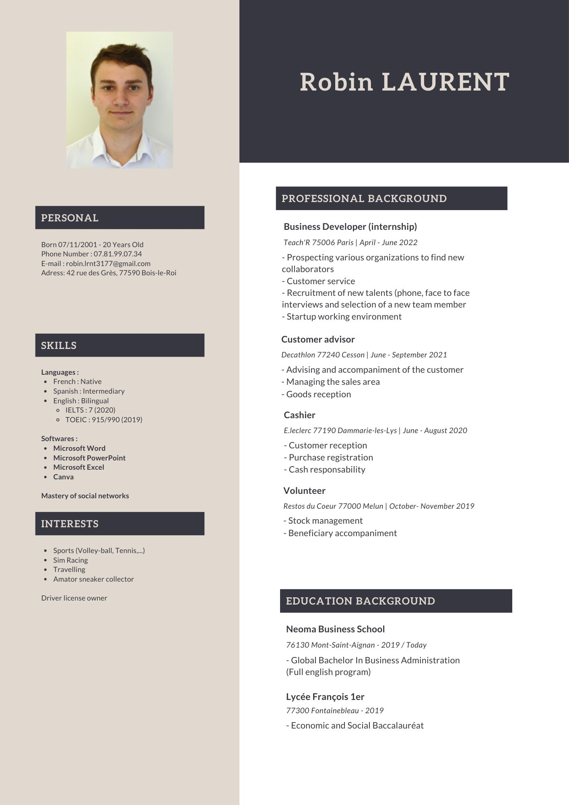

This internship will be useful for me and my future career project, because one of the domains that I appreciate is the customer relationship, the fact of working in a small structure, having in consequence more responsibilities, being able to follow-up clients over several days, would help me for sure in the future, as I had to face situations I’ve never experienced before. As it is a domain in which I would like to orient myself later, I’m glad that I could have done such an internship. I’m sure that the knowledge I gathered during this internship will help my future career, because I previously worked in greater organizational structures, now that I worked in a very small company I now viewed different workings of different sized companies, and I will now be more able to adapt myself to the situation.
